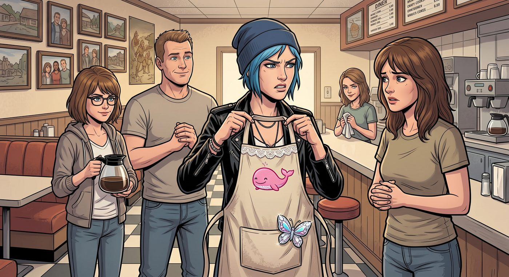

雙鯨餐廳打工日記

一、圍裙謀殺案
「不。」
Chloe 舉著那條圍裙,像是舉著一條毒蛇,「媽,我拒絕。」
那是一條雙鯨餐廳的標準制服圍裙,本該是普普通通、洗到發白的米色帆布——但此刻攤在她手裡的這條,領口多了一圈蕾絲滾邊,胸前用粉色繡線繡了一隻笑瞇瞇的小鯨魚,口袋上還別了一個亮晶晶的蝴蝶結別針。
「這是誰幹的。」Chloe 瞇眼環顧四周,「這絕對是蓄意謀殺我的人格。」
Max 站在吧檯後面,努力繃住臉,但嘴角早就洩了底。
「……妳。」Chloe 的視線精準鎖定,「妳昨晚在我房間鬼鬼祟祟半小時,說是幫我洗衣服。」
「我是幫妳洗衣服啊,」Max 一臉無辜,眼睛裡卻藏不住笑意,「洗完順便,呃,升級了一下。」
「升級?!」Chloe 一把將圍裙甩到吧檯上,伸手就要撲過去掐她脖子,「妳給我等著——」
「Chloe Elizabeth Price。」
Joyce 的聲音從廚房傳來,不高,但足夠讓 Chloe 的手在半空中僵住。下一秒,一隻手已經穩穩按住了她的肩膀,把她往後拉離 Max 三十公分。
「別動手,」Joyce 端著剛烤好的一盤瑪芬,語氣淡定得像在說今天天氣不錯,「把圍裙穿上,妳遲到八分鐘了。」
「媽!妳看看這個蝴蝶結!」
「我看到了,很可愛。」Joyce 把瑪芬放進展示櫃,頭也不回,「妳朋友手藝不錯,下次讓她幫我也繡一件。」
「這不是可不可愛的問題——」
「這是妳今天到底上不上班的問題。」Joyce 終於轉過身,雙手叉腰,那個表情 Chloe 太熟悉了——這是「別跟我廢話,馬上照做」的表情,十七年來屢試不爽,「妳每次找藉口拖時間,最後都是我多站半小時。穿上,現在,別讓我再說第三次。」
Chloe 瞪著那條圍裙,又瞪了一眼笑得毫無悔意的 Max,最後咬牙切齒地把圍裙套上頭。
蝴蝶結別針晃啊晃的,跟她整個人的氣質形成某種災難級別的不協調。
「妳給我記著。」她從牙縫裡擠出這句話,伸手戳了戳 Max 的額頭。
「記著什麼?」Max 眨眨眼,一臉裝傻的甜美。
「下次妳睡著的時候,我要在妳臉上畫鬍子。」
「妳試試看啊。」
「不准鬧了,」Joyce 已經把兩人分別推向各自的崗位,「Max 去前台,Chloe 去後廚,現在是早餐尖峰,誰都不許再耽誤時間。」
二、讀心術服務生
前台很快就湧進了第一波客人——通勤的上班族、遛狗遛到一半順便進來吃早餐的老太太,還有幾桌從布萊克威爾翹課出來的學生。
Max 站在收銀台後面,表現得比誰都游刃有餘。
一個常客剛推門進來,還沒走到座位,Max 已經開口:「布萊克咖啡,雙份鬆餅,楓糖漿另外裝?」
那人愣了一下,笑了:「妳連我今天心情不好想吃甜的都算到了?」
「猜的。」Max 眨眨眼,轉身去準備。
另一桌,一個食客支支吾吾地想點餐:「我要一份那個……呃,不要洋蔥,多加芝士,但蛋要半熟——」
Max 已經笑著把單子遞過去:「B 套餐,去洋蔥、雙份切達,單面煎太陽蛋,配低因咖啡,對嗎?」
食客目瞪口呆:「天哪,妳是我見過記憶力最恐怖的服務生。」
Chloe 在後廚探頭出來看了一眼,忍不住咕噥:「她根本是開了外掛。」
Joyce 端著咖啡壺經過,笑而不語。
三、陰陽怪氣
但不是每桌客人都那麼好應付。
靠窗那桌坐了三個布萊克威爾的學生——一看就是 Victoria 那個小圈子的跟班,平時在校園裡就愛用那種居高臨下的語氣說話。今天她們翹課跑來雙鯨餐廳,點了三杯咖啡,喝了半杯就開始挑刺。
「這咖啡也太苦了吧。」為首的女生 Taylor 皺著眉,故意提高音量,「妳們這裡是不是連機器都是二手貨啊?」
Max 走過去,語氣依然禮貌:「抱歉,我幫妳重新煮一杯,或者換成拿鐵?」
「不用了,」Taylor 斜眼打量她,語氣裡帶著那種熟悉的、居高臨下的輕蔑,「我就是好奇,像妳這種在破餐廳打工的人,平常是不是也用這種廉價咖啡機拍照,然後發到什麼藝術帳號上騙讚?」
旁邊兩個跟班配合地笑了起來。
Max 的手指在托盤邊緣頓了一下,臉上的笑容維持著,但眼神裡那點光暗了一些——這種話她在布萊克威爾聽了不是一次兩次,早就練出一副「假裝沒聽見」的本事。
她剛想開口道歉、順勢收走杯子,後廚的門忽然被撞開。
「有問題?」
Chloe 大步走出來,身上還沾著廚房的油煙味,手裡還提著剛才切菜的刀,雖然只是拿來嚇唬人,但那股氣勢已經讓整桌人瞬間坐直了背。
「Chloe——」Max 小聲想攔她。
「妳們剛才說什麼廉價咖啡機?」Chloe 把刀往砧板上一放,雙手撐在她們桌邊,居高臨下地俯視著 Taylor,「說大聲點,我廚房開著抽油煙機沒聽清楚。」
Taylor 臉上的表情僵了一下,還想端出平常在學校裡那套高高在上的態度:「我只是客觀評論——」
「客觀評論咖啡苦,還是客觀評論我朋友『用廉價咖啡機拍照騙讚』?」Chloe 直接打斷她,聲音不大,但每個字都咬得很清楚,「妳們三個坐這裡點了三杯咖啡喝掉半杯,加起來消費不到十塊錢,坐了四十分鐘,現在還好意思嫌東嫌西?」
「我們是客人——」
「客人也不能對我員工出言不遜。」Chloe 抱起手臂,「妳們要嘛正常說話,要嘛,我很樂意幫妳們把剩下的咖啡打包,順便送妳們出門。」
餐廳裡安靜了幾秒。其中一個跟班已經開始拉扯 Taylor 的袖子,小聲說「算了啦,走吧」。
Taylor 瞪了 Chloe 一眼,終於還是站起身,丟下一句「隨便啦,這種地方本來也沒什麼水準」,帶著兩個跟班摔門走了,連桌上沒喝完的咖啡都沒帶。
Chloe 看著她們的背影,嗤笑一聲,轉頭看向還愣在原地的 Max。
「妳沒事吧?」她的語氣忽然軟了下來,伸手拍了拍 Max 的肩膀。
Max 搖搖頭,眼神裡有點複雜的感動:「妳不用這樣的,我已經習慣了。」
「習慣不代表應該。」Chloe 皺眉,「妳每次都自己吞下去,不代表這些話說得對。」她頓了頓,難得正經地補了一句,「而且——妳拍的照片很好,不管誰說什麼。」
Max 愣了一下,才慢慢笑開,那個笑容比剛才對付奧客時的職業微笑真實太多。
「謝了。」
「別謝了,」Chloe 拍拍她的頭,轉身往廚房走,「妳去收桌子,我回去繼續切我的辣椒,順便,」她回頭補了句,「那杯咖啡本來就不苦,是她們自己嘴賤。」
Joyce 站在吧檯後面,把這一切看在眼裡,沒有出聲阻止,只是在心裡想——這孩子什麼時候學會替別人出頭,而不是只顧著自己惹禍了?
四、朋克爆破堡
被趕出前台、只能在後廚洗碗打下手的 Chloe,在 Joyce 的嚴格盯防下,終於被逼著自己做出一份完整的「雙鯨特製辣味牛肉漢堡」。
「太溫柔了。」Chloe 嫌棄地看著 Joyce 的經典配方,偷偷往牛肉餅裡倒了大劑量的塔巴斯科辣醬、黑胡椒,甚至加了一點私藏的墨西哥煙燻辣椒粉。
剛好此時,在門口巡邏兼幫忙搬麵粉的 David 走進來休息。
「試吃一下。」Chloe 把成品端到他面前,語氣裡帶著點不懷好意的期待。
David 毫無防備地咬了一大口。
一秒鐘後,這位身經百戰的老兵臉色瞬間漲紅,喉結劇烈滾動,猛灌了整整一大杯冰水,喘著粗氣瞪大眼睛。
「咳……咳!」他嗆得眼淚都快出來了,「Chloe!你是把催淚瓦斯的配方混進牛肉餡裡了嗎?」
Chloe 抱著手臂得意地冷笑:「這叫『朋克爆破堡』,老兵。頂不住就承認你老了。」
結果 David 喘完氣,居然默默把剩下的漢堡全吃光了,抹了抹嘴硬邦邦地評價了一句:
「……很重口味。但在野戰口糧裡算得上頂級硬菜。明天給我打包兩個帶去車庫。」
Joyce 在旁邊笑得直搖頭,悄悄在菜單的小黑板上加了一行字:《今日特供:Chloe 的野火漢堡》。
五、打烊後
下午四點,營業結束的翻牌翻轉。餐廳裡只剩下陽光斜斜穿過百葉窗的塵埃、咖啡壺最後的咕嘟聲,以及點唱機裡放著的低緩民謠。
Max 和 Chloe 坐在吧台上數今天賺到的小費。靠著 Max 的「讀心術級服務」和 Chloe 辣味漢堡的噱頭,收銀罐裡塞得滿滿噹噹。
Joyce 端來一盤剛烤好的熱櫻桃派,給兩人各分了一大塊,溫柔地揉了揉 Chloe 亂糟糟的藍頭髮:
「看吧,你這雙手不只會擺弄螺絲刀和電吉他,也能做出讓人吃飽開心的東西。」
Chloe 低頭戳著派,忽然想起那條蕾絲蝴蝶結圍裙,還掛在她身上沒脫下來。她瞥了一眼身邊的 Max,語氣裡沒了早上的怒氣,反倒帶著點鬆快的調侃:
「這條圍裙我勉強留著吧。」她說,「反正也沒人規定,朋克不能繡蝴蝶結。」
Max 抬頭看她,笑意從眼睛裡漫開來:「這是妳這輩子最沒骨氣的投降宣言。」
「閉嘴,吃妳的派。」
Max 擦了擦圍裙上的麵粉,設定好相機的自拍定時,跑回吧台坐下。
鏡頭在「咔噠」一聲中定格——Joyce 站在吧檯後笑得溫暖而欣慰;David 剛好推門進來手裡扛著一袋土豆,表情依舊嚴肅但眼神放鬆;Chloe 嘴裡叼著一根薯條,得意地比著剪刀手,臉頰上還沾著一小抹麵粉,身上那條蕾絲圍裙格外顯眼;Max 靠在 Chloe 身邊,眼裡帶著治癒一切的溫柔笑意。
在這座曾經風雨飄搖的小鎮裡,生活不需要時空大戰,也不需要拯救世界。一塊烤得金黃的鬆餅、一盤雖然嗆辣但實打實的漢堡、一句替朋友出頭的硬氣話,以及一家人圍在油煙與香味裡的拌嘴,就是對這兩個女孩最真實、最踏實的救贖。